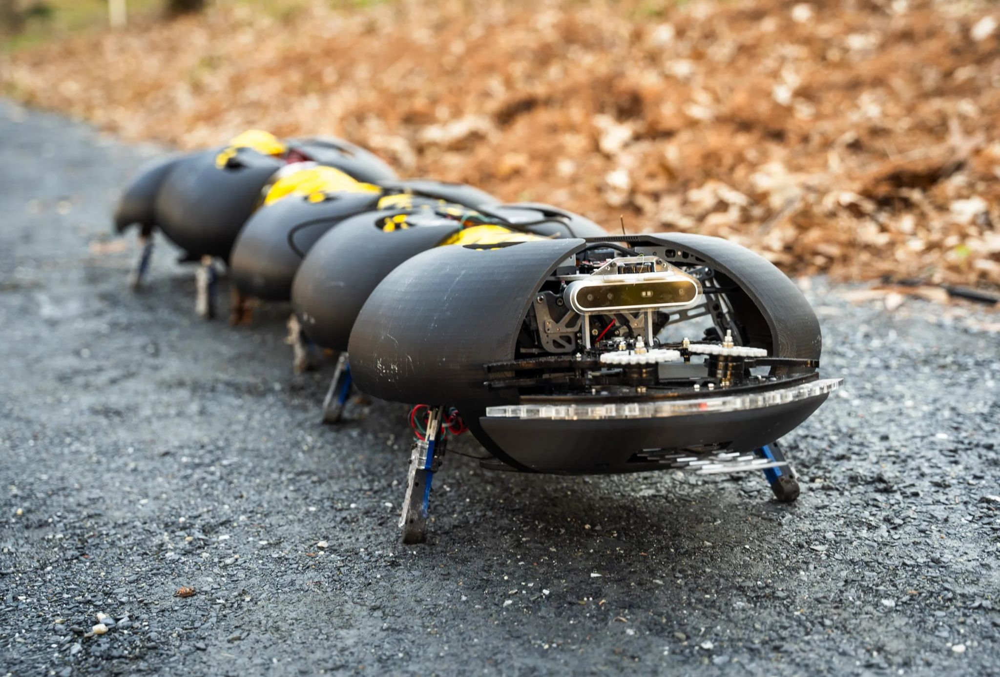

הנה באג שלא צריך לפתור 🚜 חרקים רובוטיים בחקלאות:
פורסם במקור ב LinkedIn
הנה באג שלא צריך לפתור 🚜 חרקים רובוטיים בחקלאות:
Ground Control Robotics פיתחו פתרון מבריק לבעיה שמטרידה חקלאים כבר שנים: בקרת עשבים בגידולים צפופים כמו ענבים, אוכמניות ותותים.
במקום לשלוח פועלים שיזחלו בין השורות - הם שולחים מרבה-רגליים רובוטי 🤖.
הרובוט:
🧪 מבוסס על מחקר ביומכני מאוניברסיטת ג’ורג’יה טק
🔗 בנוי ממקטעים עם רגליים רבות, מחוברות בכבלים
🤖 מפיק תנועה חלקה בלי לפגוע ביבול
🧠 לא דורש חיישנים או שליטה מרכזית - תכנון מכני חכם
👥 מיועד לפעול בלהקות קטנות מסביב לשעון
💰 עלות נמוכה – צפוי לעלות כמה אלפי דולרים ליחידה
🌱 בקרת עשבים מדויקת גם בגידולים לא שיטתיים
💸 חיסכון של מאות עד אלפי דולרים לדונם
🚜 פתרון שמחליף עבודת כפיים קשה ויקרה
פיילוטים כבר רצים בג'ורג'יה עם חקלאי אוכמניות ובעלי כרמים.
בהמשך אולי גם עבור מחסני חירום, צבא, או סתם החצר האחורית שלי ושלך 🐛
לכתבה המלאה:
https://lnkd.in/d-WPktNM
